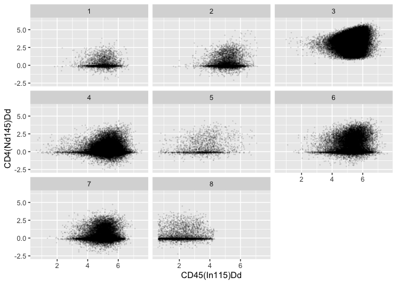

tidyFlowCore is an R package that bridges the gap between flow cytometry analysis using the flowCore package and the tidy data principles advocated by the tidyverse. It provides a suite of dplyr-, ggplot2-, and tidyr-like verbs specifically designed for working with flowFrame and flowSet objects as if they were tibbles; however, your data remain flowCore flowFrames and flowSets under this layer of abstraction.
Using this approach, tidyFlowCore enables intuitive and streamlined analysis workflows that can leverage both the Bioconductor and tidyverse ecosystems for cytometry data.
Installation instructions
Get the latest stable R release from CRAN. Then install tidyFlowCore from Bioconductor using the following code:
if (!requireNamespace("BiocManager", quietly = TRUE)) {
install.packages("BiocManager")
}
BiocManager::install("tidyFlowCore")And the development version from GitHub with:
BiocManager::install("keyes-timothy/tidyFlowCore")Example
tidyFlowCore allows you to treat flowCore data structures like tidy data.frames or tibbles. It does so by implementing dplyr, tidyr, and ggplot2 verbs that can be deployed directly on the flowFrame and flowSet S4 classes.
In this section, we give a brief example of how tidyFlowCore can enable a data analysis pipeline to use all the useful functions of the flowCore package and many of the functions of the dplyr, tidyr, and ggplot2 packages.
Load required packages
library(tidyFlowCore)
library(flowCore)Read data
# read data from the HDCytoData package
bcr_flowset <- HDCytoData::Bodenmiller_BCR_XL_flowSet()
#> see ?HDCytoData and browseVignettes('HDCytoData') for documentation
#> loading from cacheData transformation
The flowCore package natively supports multiple types of data preprocessing and transformations for cytometry data through the use of its tranform class.
For example, if we want to apply the standard arcsinh transformation often used for CyTOF data to our current dataset, we could use the following code:
asinh_transformation <- flowCore::arcsinhTransform(a = 0, b = 1/5, c = 0)
transformation_list <-
flowCore::transformList(
colnames(bcr_flowset),
asinh_transformation
)
transformed_bcr_flowset <- flowCore::transform(bcr_flowset, transformation_list)Alternatively, we can also use the tidyverse’s functional programming paradigm to perform the same transformation. For this, we use the mutate-across framework via tidyFlowCore:
Cell type counting
Suppose we’re interested in counting the number of cells that belong to each cell type (encoded in the population_id column of bcr_flowset) in our dataset. Using standard flowCore functions, we could perform this calculation in a few steps:
# extract all expression matrices from our flowSet
combined_matrix <- flowCore::fsApply(bcr_flowset, exprs)
# take out the concatenated population_id column
combined_population_id <- combined_matrix[, 'population_id']
# perform the calculation
table(combined_population_id)
#> combined_population_id
#> 1 2 3 4 5 6 7 8
#> 3265 6651 62890 51150 1980 18436 24518 3901tidyFlowCore allows us to perform the same operation simply using the dplyr package’s count function:
bcr_flowset |>
dplyr::count(population_id)
#> # A tibble: 8 × 2
#> population_id n
#> <dbl> <int>
#> 1 1 3265
#> 2 2 6651
#> 3 3 62890
#> 4 4 51150
#> 5 5 1980
#> 6 6 18436
#> 7 7 24518
#> 8 8 3901And tidyFlowCore also makes it easy to perform the counting broken down by other variables in our metadata:
bcr_flowset |>
# use the .tidyFlowCore_identifier pronoun to access the name of
# each experiment in the flowSet
dplyr::count(.tidyFlowCore_identifier, population_id)
#> # A tibble: 128 × 3
#> .tidyFlowCore_identifier population_id n
#> <chr> <dbl> <int>
#> 1 PBMC8_30min_patient1_BCR-XL.fcs 1 31
#> 2 PBMC8_30min_patient1_BCR-XL.fcs 2 112
#> 3 PBMC8_30min_patient1_BCR-XL.fcs 3 761
#> 4 PBMC8_30min_patient1_BCR-XL.fcs 4 1307
#> 5 PBMC8_30min_patient1_BCR-XL.fcs 5 5
#> 6 PBMC8_30min_patient1_BCR-XL.fcs 6 127
#> 7 PBMC8_30min_patient1_BCR-XL.fcs 7 444
#> 8 PBMC8_30min_patient1_BCR-XL.fcs 8 51
#> 9 PBMC8_30min_patient1_Reference.fcs 1 52
#> 10 PBMC8_30min_patient1_Reference.fcs 2 132
#> # ℹ 118 more rowsNesting and unnesting
flowFrame and flowSet data objects have a clear relationship with one another in the flowCore API - essentially nested flowFrames. In other words, flowSets are made up of multiple flowFrames!
tidyFlowCore provides a useful API for converting between flowSet and flowFrame data structures at various degrees of nesting using the group/nest and ungroup/unnest verbs. Note that in the dplyr and tidyr APIs, group/nest and ungroup/unnest are not synonyms (grouped data.frames are different from nested data.frames). However, because of how flowFrames and flowSets are structured, tidyFlowCore’s group/nest and ungroup/unnest functions have identical behavior, respectively.
# unnesting a flowSet results in a flowFrame with an additional column,
# 'tidyFlowCore_name` that identifies cells based on which experiment in the
# original flowSet they come from
bcr_flowset |>
dplyr::ungroup()
#> flowFrame object 'file93123e01cac8'
#> with 172791 cells and 40 observables:
#> name desc range minRange maxRange
#> $P1 Time Time 2399633 0.0000 2399632
#> $P2 Cell_length Cell_length 69 0.0000 68
#> $P3 CD3(110:114)Dd CD3(110:114)Dd 9383 -61.6796 9382
#> $P4 CD45(In115)Dd CD45(In115)Dd 5035 0.0000 5034
#> $P5 BC1(La139)Dd BC1(La139)Dd 14306 -100.8797 14305
#> ... ... ... ... ... ...
#> $P36 group_id group_id 3 0 2
#> $P37 patient_id patient_id 9 0 8
#> $P38 sample_id sample_id 17 0 16
#> $P39 population_id population_id 9 0 8
#> $P40 .tidyFlowCore_name .tidyFlowCore_name 17 0 16
#> 297 keywords are stored in the 'description' slot
# flowSets can be unnested and renested for various analyses
bcr_flowset |>
dplyr::ungroup() |>
# group_by cell type
dplyr::group_by(population_id) |>
# calculate the mean HLA-DR expression of each cell population
dplyr::summarize(mean_expression = mean(`HLA-DR(Yb174)Dd`)) |>
dplyr::select(population_id, mean_expression)
#> # A tibble: 8 × 2
#> population_id mean_expression
#> <dbl> <dbl>
#> 1 3 3.67
#> 2 7 3.33
#> 3 4 4.33
#> 4 2 87.1
#> 5 6 88.2
#> 6 8 3.12
#> 7 1 51.4
#> 8 5 18.0Plotting
tidyFlowCore also provides a direct interface between ggplot2 and flowFrame or flowSet data objects. For example…
library(ggplot2)
bcr_flowset |>
dplyr::mutate(across(-ends_with("_id"), \(.x) asinh(.x / 5))) |>
ggplot(aes(x = `CD45(In115)Dd`, y = `CD4(Nd145)Dd`)) +
geom_point(size = 0.1, alpha = 0.1) +
facet_wrap(facets = vars(population_id))
Citation
Below is the citation output from using citation('tidyFlowCore') in R. Please run this yourself to check for any updates on how to cite tidyFlowCore.
print(citation('tidyFlowCore'), bibtex = TRUE)
#> To cite package 'tidyFlowCore' in publications use:
#>
#> Keyes TJ (2024). _tidyFlowCore: Bringing flowCore to the tidyverse_.
#> doi:10.18129/B9.bioc.tidyFlowCore
#> <https://doi.org/10.18129/B9.bioc.tidyFlowCore>,
#> https://github.com/keyes-timothy/tidyflowCore/tidyFlowCore - R
#> package version 0.99.0,
#> <http://www.bioconductor.org/packages/tidyFlowCore>.
#>
#> A BibTeX entry for LaTeX users is
#>
#> @Manual{,
#> title = {tidyFlowCore: Bringing flowCore to the tidyverse},
#> author = {Timothy J Keyes},
#> year = {2024},
#> url = {http://www.bioconductor.org/packages/tidyFlowCore},
#> note = {https://github.com/keyes-timothy/tidyflowCore/tidyFlowCore - R package version 0.99.0},
#> doi = {10.18129/B9.bioc.tidyFlowCore},
#> }Please note that the tidyFlowCore was only made possible thanks to many other R and bioinformatics software authors, which are cited either in the vignettes and/or the paper(s) describing this package.
Code of Conduct
Please note that the tidyFlowCore project is released with a Contributor Code of Conduct. By contributing to this project, you agree to abide by its terms.
Development tools
- Continuous code testing is possible thanks to GitHub actions through usethis, remotes, and rcmdcheck customized to use Bioconductor’s docker containers and BiocCheck.
- Code coverage assessment is possible thanks to codecov and covr.
- The documentation website is automatically updated thanks to pkgdown.
- The code is styled automatically thanks to styler.
- The documentation is formatted thanks to devtools and roxygen2.
For more details, check the dev directory.
This package was developed using biocthis.